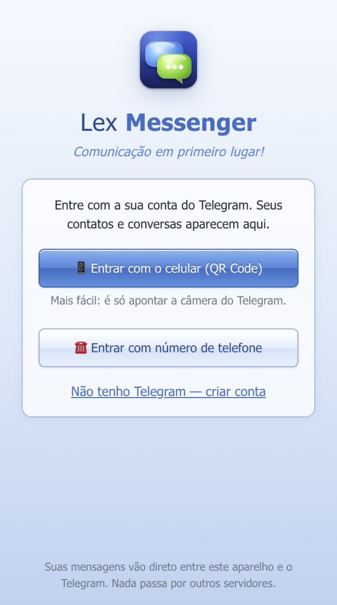
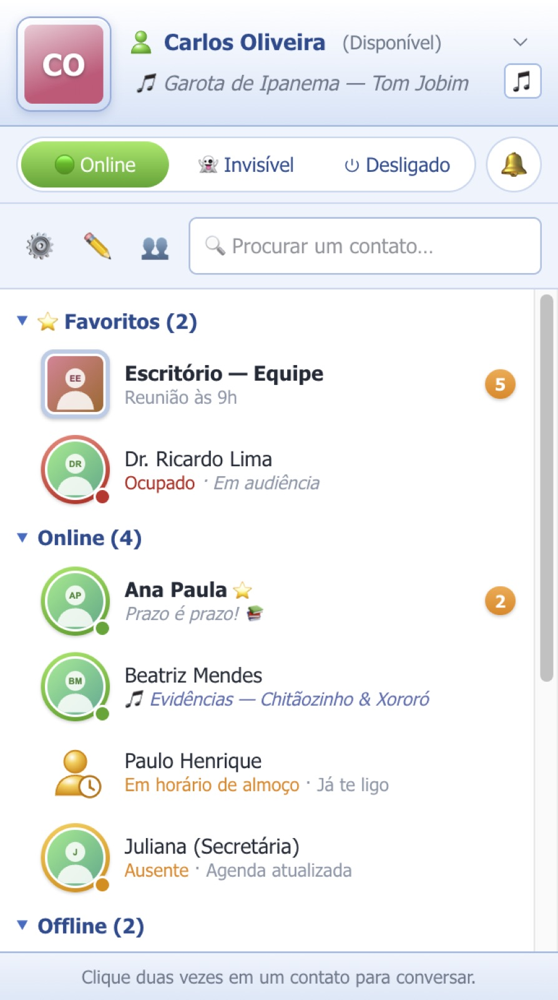
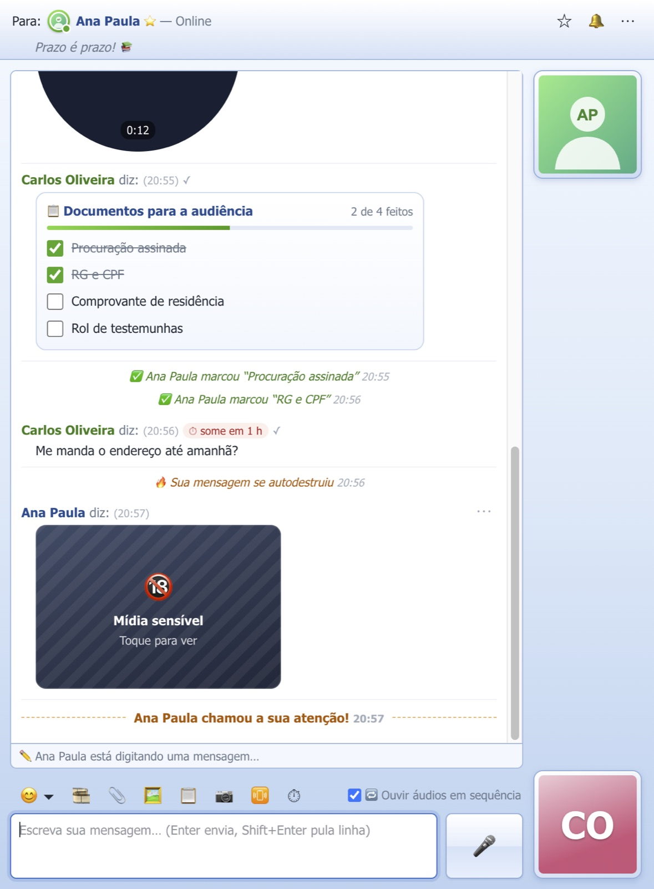
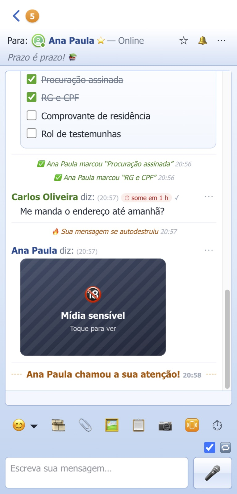

Aplicativo
Lex Messenger
Comunicação em primeiro lugar! Mensageiro no estilo clássico, com a sua conta do Telegram.
SituaçãoNovo
Versão1.1.5
PlataformasMac, Windows, Android e iPhone
PreçoGratuito
O que faz
Recursos principais
- Entra com a sua conta do Telegram (QR Code ou telefone) e cria conta para quem ainda não tem.
- Lista de contatos por status, uma janela para cada conversa, “chamar atenção”, sons e avisos no canto da tela.
- Conversas completas: responder, editar, apagar, encaminhar, reações, áudios, recados, figurinhas e arquivos.
- Mensagens que se autodestroem, mídia sensível coberta e lista de tarefas compartilhada.
- Avisos no celular com o app fechado (Android) e widget “Online agora”.
- Sem servidor intermediário: conecta direto ao Telegram.
TelasEntrada com a conta do Telegram · toque para ampliar Lista de contatos · toque para ampliar Janela de conversa · toque para ampliar Conversa no Android · toque para ampliar
Como é o Lex Messenger








Contatos fictícios.
Manual
Como instalar e começar
- Mac: baixe o
.dmgdo seu tipo de Mac e arraste o Lex Messenger para Aplicativos. - Windows:
LexMessenger-Windows-Instalador.exe. Android:LexMessenger-Android.apk(ou pelo Obtainium). - iPhone: abra o endereço no Safari → Compartilhar → Adicionar à Tela de Início.
- Entre com o QR Code (pelo Telegram do celular) ou com o seu número.
Status
Disponível, Ocupado, Ausente, Invisível ou Desligado por um tempo.
Privacidade
A sessão fica criptografada no aparelho; nada é guardado sem você pedir.
Importante: O Lex Messenger usa a sua conta do Telegram e segue as regras do Telegram.
Dúvidas na primeira abertura? Veja as orientações gerais.